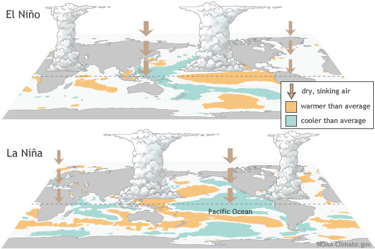

source("lab_03_tests.r")
library(testthat)
library(digest)
library(dplyr)
flows = read.csv('../datasets/Lab_03_fraserRiverAnnualExtremes.csv')
ensos = read.csv('../datasets/Lab_03_ensoPhaseAnnual.csv')
snows = read.csv('../datasets/Lab_03_fraserBasinSnowData.csv')GEOG 374: Regression - The Impact of Pacific Ocean Temperatures on Snowpack and Floods in the Fraser River Basin
- Authors: Hewitt Lab (Kevin Pierce, Nina Hewitt and Micheal Jerowsky) \(\times\) COMET Team (Charlotte White, and Jonathan Graves)
- Last Update: 9 September 2023
Pierce, K., Hewitt, N., Jerowsky, M., 2023. Interactive Notebooks for Statistics and Computation in Geography: The Impact of Pacific Ocean Temperatures on Snowpack and Floods in the Fraser River Basin. In Adshade et al. 2023. The COMET Project: Creating Online Materials for Econometrics Teaching. https://comet.arts.ubc.ca/.
Outline
Prerequisites
- Introduction to Jupyter
- Introduction to R
- Introduction to Data
Outcomes
After completing this notebook, you will be able to: * Explore data to gain a better understanding of its content and structure. * Determine if your data meet the assumptions of correlation and regression. * Conduct a correlation and regression analysis.
References
Introduction
In this lab, we will investigate how El Nino Southern Oscillation (ENSO) affects floods and snowfall in Canada’s Fraser River system. We will apply regression analysis to snowpack and discharge data in the Fraser basin. This will allow us to determine if these data indicate a shift in precipitation characteristics through time, and to what extent precipitation patterns may depend on ENSO. Many of Earth’s major river basins are affected by climate change and ENSO. See for example the IPCC reports.
The Fraser River, depicted below at Lillooet BC, is southern British Columbia’s major river system. It originates at the BC-Alberta border and empties into the Salish Sea directly beside the UBC Vancouver campus nearly 1400 km later.
The El Nino Southern Oscillation is a phenomenon whereby the circulation patterns of the Pacific Ocean oscillate between three phases: El Nino, La Nina, and Neutral. These phases are identified by measurements of ocean surface temperature, and they are widely acknowledged to affect evaporation and atmospheric circulation patterns, leading to changes in precipitation which affect entire continents.
The image below shows the distribution of sea surface temperatures in El Nino and La Nina conditions.

Data
This lab involves three different datasets. Each of these are timeseries. The timeseries do not necessarily span the same number of years, and datasets are imperfect and contain missing values. We will have to locate and work around these imperfections.
fraserRiverAnnualExtremes.csv reports maximum annual discharges in the Fraser River at Hope, BC from 1912-2018. These floods always occur in early summer during the major snowmelt. Units of discharge are [ \(𝑚^3/𝑠\) ] (sometimes written “cms”). This is the volume of water flowing past a line across the channel in a second.
ensoPhaseAnnual.csv reports the Oceanic Nino Index (ONI), which is a dimensionless measure of sea surface temperature. When ONI < -0.6, we say ENSO is in the La Nina phase. When ONI > 0.6, we say ENSO is in the El Nino phase. Otherwise, ENSO is in the Neutral phase.
fraserBasinSnowData.csv reports the snowpack on April 1st of each year at 14 different gauging stations in the Fraser basin from 1945-2021. The snowpack is characterized by “snow water equivalent” (SWE), which is the depth of water obtained if an area of snow is melted. The units of SWE are millimeters (mm).
Prior to beginning this lab, run the r code below to read in the .csv files and save each to a variable. The source and library functions are included so that you can complete the test questions in this module and they can be autograded.
Part 1: Key Concepts
Correlation and Regression
Correlation is a statistical method to determine whether a relationship exists between two variables, as well as the direction and strength of that relationship. It is used to test the statistical significance of that association. Meanwhile, regression is a statistical method to describe the nature of the relationship between variables. Precisely, it has predictive value. In short, we use correlation to represent a linear relationship between two variables, while we use regression to produce a line of best fit that will allow us to estimate the value of one variable based on the other. However, there are some basic assumptions that must be fulfilled before conducting correlation or regression analysis: - The variables under investigation are continuous. - The datasets have a bivariate normal distribution. - The data demonstrate homoscedasticity, or the size of the error term is the same for all values of the independent variable. - The data follow a linear relationship. - Outliers have been removed.
Typically, a researcher will begin with correlation analysis even if they intend to conduct a regression. If the outcome of the correlation analysis indicates that a statistically significant relationship exists, a regression analysis can then be conducted to allow for prediction and extrapolation. Generally speaking, analysis is conducted as follows:
- Visualize your data using a scatterplot to determine if it meets the basic assumptions of correlation and regression analysis.
- Determine the null and alternative hypotheses for your correlation analysis.
- Calculate the Pearson Product Moment Correlation Coefficient (PPMCC, r).
- Determine the strength and direction of the relationship.
- Calculate the significance of \(r\).
- If \(r\) is significant, reject \(H_0\) and continue to step 7 to conduct regression analysis.
- Calculate the equation for the line of best fit.
- Calculate the coefficient of determination (\(r^2\)).
- Make predictions and extrapolate values based on the regression line equation.
Independent and Dependent Variables
In simple correlation and regression we work with two variables: * Independent variable (x): This is the variable that is changed or controlled by the researcher in order to test its effects on the dependent variable. In some cases the researcher may not control or manipulate this variable, but it is the variable which is thought to affect the dependent variable. * Dependent variable (y): This is the variable being tested and measured by the researcher and is not manipulated or controlled.
Visualizing Correlation Using a Scatterplot
The relationship between our independent (x) and dependent (y) variables is visualized using a scatterplot in correlation analysis. A positive correlation will result in the value of y increasing as x increases, while a negative correlation will result in the value of y decreasing as x increases. The degree to which data pairs are spread or tightly clustered is also indicative of the strength of the relationship.

Pearson Product Moment Correlation Coefficient (PPMCC)
The strength and direction of the linear relationship between two variables is computed as the Pearson Product Moment Correlation Coefficient (PPMCC, \(r\)). It can vary in value from -1 (high negative linear relationship) to +1 (high positive linear relationship). We will determine \(r\) in this lab using the cor.test function; however, the equation to calculate the PPMCC statistic is as follows:
\[ \displaystyle r = \frac{n(\sum xy) - (\sum x)(\sum y)}{\sqrt{[n(\sum x^2) - (\sum x)^2][n(\sum y^2) - (\sum y)^2]}} \]
Once \(r\) has been calculated, it is then important to determine if it is indicative of a statistically significant relationship. There are multiple ways to conduct a hypothesis test to determine the statistical significance of \(r\); however, in this lab we will determine the p-values associated with a t-test statistic and compare it to our alpha of 0.05. For such a test, our null and alternative hypotheses will be as follows:
\[ H_0: \rho = 0 \] \[ H_1: \rho \neq 0 \]
If our computed p-value is less than the critical value, then there is a statistically significant correlation present and we can reject our null hypothesis. We will be using the cor.test function to determine this.
Regression
If the result of our correlation analysis is statistically significant, we can conduct a regression analysis to calculate a line of best fit to provide a model for prediction:

The line of best fit (or the “least squares line”) visualizes the sum of the squares of the vertical distances from each data point to the line, such that this distance is kept to a minimum. In addition, the closer the data points are to the line, the better the fit and the predictive capacity of the regression equation. The equation for the line of best fit is:
\[ y' = a + bx \]
Such that y': predicted value of y; a: y-intercept; b: slope; x: value of x.
Meanwhile, the coefficient of determination, \(r^2\), can also be calculated by simply squaring our PPMCC value to provide a measure of the variation of the dependent variable that is explained by the regression line and the independent variable. In other words, this is a ratio of explained variation to the total variation present. The remaining variation in the y variable that cannot be explained by x can also be calculated as \(1 - r^2\), and this is called the coefficient of non-determination.
In order to predict the value of y for a given value of x, we simply replace x with the given value and solve for y'. However, it is important to remember that the power of this prediction is directly related to our \(r^2\) value. Additionally, making a prediction outside of the bounds of our data (e.g. extrapolation) can be erroneous—be cautious.
Part 2: Lab Exercises
Exercise 1: Data Visualization and Correlation Analysis of Floods Over Time
First we will ensure that our data meet the assumptions of correlation and regression, and then we will investigate whether floods have changed through time within the Fraser basin using correlation analysis.
A) Investigate the dataframes for this lab using head and tail to view their structure, headings, and the total number of records.
head(flows)
tail(flows)head(ensos)
tail(ensos)head(snows)
tail(snows)Question 1: What was the maximum annual discharge (max) in the Fraser River at Hope, BC in 2011?
answer_1 = # your answer here
test_1()B) Produce a scatterplot of maximum annual Fraser River flow versus time. Be sure to label your axes with units and include a title. You can use plot(x,y) function with appropriate vectors y and x from the flows dataframe.
plot(flows$year,
flows$max,
xlab='Year',
ylab='Maximum annual discharge [cms]',
main='Fraser River maximum annual floods through time',
col='blue'
)Question 2: In which year was the largest recorded flood in this dataset?
1921
1950
1975
2001
answer_2 = '' # your answer here ('A', 'B', 'C', or 'D')
test_2()Question 3: Recall that in order to fulfill the underlying assumptions of regression, the data must demonstrate homoscedasticity, or similar variance in error terms for all values of the independent variable. If the data do not demonstrate this quality, they are said to be heteroscedastic. Are the maximum discharges heteroscedastic or homoscedastic?
answer_3 <- '' # your answer here ('heteroscedastic' or 'homoscedastic')
test_3()C) Construct a Q-Q plot to check if maximum annual discharges are normally distributed as required by regression analysis.
x = flows$max
qqnorm(x, main='Normal Q-Q Plot for Maximum Annual Discharge')
qqline(x, col='steelblue')D) Conduct a log transformation of discharge to produce a more normally-distributed dataset usinglog(flow$max) to investigate this. Then run the qqnorm and qqline functions again to visualize the data.
x = log(flows$max)
qqnorm(x, main='Normal Q-Q Plot for Log-transformed Maximum Annual Discharge')
qqline(x, col='steelblue')E) Conduct a Pearson’s correlation analysis between log-transformed discharges and time. Then extract the correlation coefficient and p-value and assign these variables r1 and p1 respectively. Don’t forget to assign references to the variables. Adapt the following code:
x = # reference the independent variable
y = # reference the dependent variable
(C = cor.test(x, y)) # the extra parentheses will print the output for reading
p1 = C$p.value # extract the p value from the output C of correlation analysis
r1 = C$estimate # extract the sample correlation coefficient from the output CQuestion 4: What are the null and alternative hypotheses for the Pearson correlation analysis?
\(H_0: \rho = 0\); \(H_1: \rho > 0\)
\(H_0: \rho = 0\); \(H_1: \rho \neq 0\)
\(H_0: \rho \neq 0\); \(H_1: \rho = 0\)
\(H_0: \rho < 0\); \(H_1: \rho \neq 0\)
answer_4 <- '' # your answer here ('A', 'B', 'C', or 'D')
test_4()F) Summarize your results. Is there a statistically significant correlation between discharge and time at \(\alpha\) = 0.05? State your conclusion and describe how you determined it with specific reference to the appropriate numerical values.
Write your answer here
Exercise 2: Correlation and Regression Analysis of Snowpacks Over Time
Now we will investigate snowpack through time with a similar technique as in exercise 1. An added complication is that the snow measurements come from gauging stations which have different elevations and precipitation characteristics. We prepared the data by shifting and scaling it to allow for direct comparison across gauging stations, such that:
\[ z = \frac{x_s - \bar{x}_s}{\sigma_{x_s}} \]
Here, \(x_s\) is the SWE at a station, \(\bar{x}_s\) is the mean SWE at that station, and \(\sigma_{x_s}\) is the standard deviation of SWE at that station. The resulting \(z\) is a dimensionless measure of snowpack which can be compared across stations.
A) Conduct correlation analysis between \(z\) and time. Extract the p-value and test statistic and assign them to variables p2 and r2 respectively. You can assume the data are monotonic, homoscedastic, and normally-distributed as required by Pearson’s method—we checked for you. There are slight departures from normality in the lower tail which reduces the reliability of results a bit. Adapt the following code:
x = snows$year # reference the independent variable
y = snows$z # reference the dependent variable
(C = cor.test(x, y)) # the extra parentheses will print the output for reading
p2 = C$p.value # extract the p value from the output C of correlation analysis
r2 = C$estimate # extract the sample correlation coefficient from the output CQuestion 5: Summarize the results of your correlation analysis at \(\alpha\)=0.05, making specific reference to the appropriate numerical values.
Write your answer here
Question 6: What is the \(r^2\) value associated with the PPMCC? Please round your answer to 3 decimal places.
answer_6 = # your answer here
test_6()B) Make a scatterplot of the dimensionless snowpack metric \(z\) against time (with time on the x-axis). Include the best fit regression line. Be sure to include axis labels, units, and a title. Further include text showing the equation of the regression line and its p-value. Adapt the following code:
x = # reference the independent variable
y = # reference the dependent variable
plot(x,
y,
xlab = '', # provide a descriptive label
ylab = '', # provide a descriptive label
main = '', # provide a descriptive title
col = 'brown'
)
(l = lm(y ~ x)) # make a linear model on the data. Extra parentheses are to print.
abline(l, col='black', lw=3) # superimpose the linear model over the data.
text(1960, -2.1, 'y = 19.31 - 0.0097x') # first two arguments control position.
text(1960, -2.5, 'p =') # assign the p-value from your correlation analysis to the text labelQuestion 7: Summarize the evidence you have gathered for how snowpack and flood discharges in the Fraser basin have changed through time. Briefly describe a few implications of any of your results for society or the environment in BC.
Write your answer here
Exercise 3: Correlation and Regression Analysis of ENSO on Maximum Annual Fraser River Discharges
Finally, we will analyze the impact of ENSO on maximum annual Fraser River discharges. However, before we can do that an appropriate dataframe must be prepared. Currently the flows and ensos dataframes include different years. We can match the years these two dataframes have in common and create a new dataframe for use in our analysis using the following code:
mask = match(flows$year,ensos$year) # obtain the correct rows in the 'ensos' dataframe
ensos1 = ensos[mask,] # filter out the subset of the ensos dataframe with the correct yearsA) Plot Fraser River maximum annual discharge versus the Oceanic Nino Index. You will want to plot flows$max versus ensos1$oni. Keep in mind that river discharges are dependent on Pacific Ocean temperatures, and not the converse. To make your plot, adapt the following code:
x = # reference the independent variable
y = # reference the dependent variable
plot(x,
y,
xlab = '', # provide a descriptive label
ylab = '', # provide a descriptive label
main = '' # provide a descriptive title
)Question 8: Describe any trend in the data. State the requirements of Pearson’s correlation analysis. Do the data appear to meet these? Explain in a sentence or two. Based on the plot, do you expect El Nino or La Nina years to have higher precipitation in BC? Why? Hint: Remember that ONI > 0.6 represents El Nino while ONI < -0.6 represents La Nina.
Write your answer here
B) Conduct a correlation analysis. Assign the p-value and sample correlation coefficient to variables p3 and r3. Adapt the following code:
x = # reference the independent variable
y = # reference the dependent variable
(C = cor.test(x, y)) # the extra parentheses will print the output for reading
p3 = C$p.value # extract the p value from the output C of correlation analysis
r3 = C$estimate # extract the sample correlation coefficient from the output CQuestion 9: Summarize your results as to whether there is a significant relationship between ENSO conditions and Fraser River floods at \(\alpha\)=0.05. Make specific reference to the appropriate numerical values.
Write your answer here
C) Re-make your earlier plot, this time including a linear model to the data. Add text indicating (i) the regressed relationship, (ii) the p-value, and (iii) the coefficient of determination \(r^2\). Adapt the following code:
x = # reference the independent variable
y = # reference the dependent variable
plot(x,
y,
xlab = '', # provide a descriptive label
ylab = '', # provide a descriptive label
main = '', # provide a descriptive title
col = 'brown'
)
(l = lm(flows$max ~ ensos1$oni)) # make a linear model on the data. Extra parentheses are to print.
abline(l, col='black', lw=3) # superimpose the linear model over the data.
text(1.5,14000, 'y = 8718.4 - 681.6x') # first two arguments control position.
text(1.5, 13500, 'p << ') # assign the p-value from your correlation analysis to the text label
text(1.5, 13000, 'R^2 = ') # assign the r2 value to the text label.Question 10: For an ONI value of 3.5, what is the predicted annual discharge? Hint: the linear model you have developed has predictive value. Round your answer to 1 decimal place.
answer_10 = # your answer here
test_10()